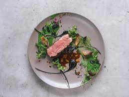

La atención al detalle y el compromiso con la excelencia son aspectos destacados en Magnus. Cada miembro del personal está dedicado a brindar un servicio excepcional, asegurándose de que los comensales se sientan atendidos y mimados en todo momento. En resumen, Magnus es un restaurante que combina la sofisticación con la calidez, ofreciendo una experiencia culinaria inolvidable. Desde su elegante ambiente hasta su exquisito menú y su impecable servicio, este lugar se ha convertido en un destino imperdible para los amantes de la buena comida y la atención excepcional.